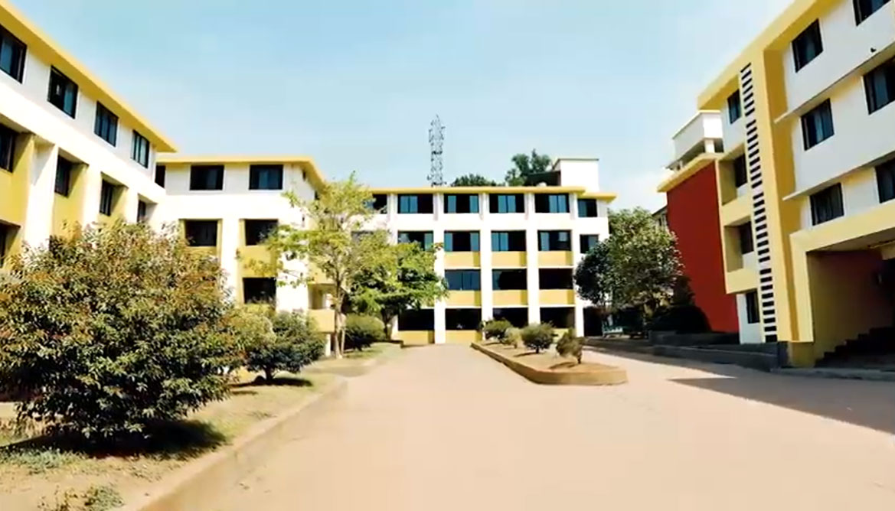
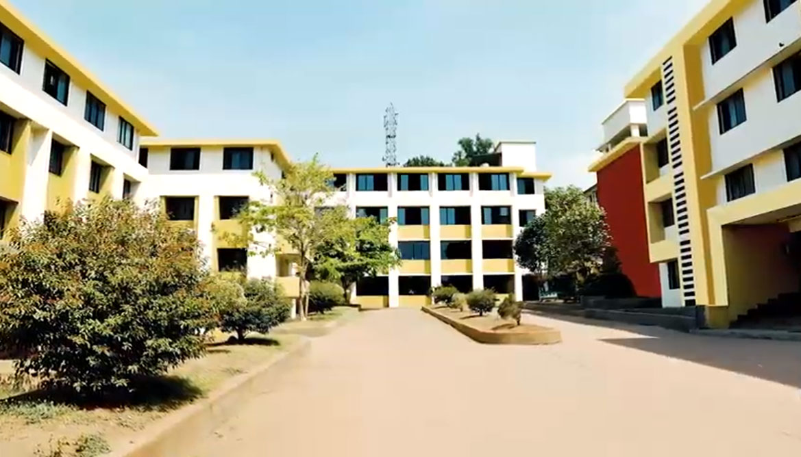

A leading educational institute in the field of Engineering, Business & Management Studies, IT & Software, NMAM Institute of Technology offers M.E./M.Tech course. It was established in 1986 in the city of Karnataka to provide education and skills through a curriculum focused on Computer Science Engineering, Construction Engineering, Electronics & Communication Engineering, Energy Engineering, Biotechnology Engineering, Power Engineering, Structural Engineering, VLSI Design, Artificial Intelligence & Machine Learning, Biotechnology Engineering, Civil Engineering, Computer Science Engineering, Electrical Engineering, Electronics & Communication Engineering, Information Technology, Mechanical Engineering, Robotics Engineering. Through well-designed full-time diploma course, the institute aims to equip students with skills to excel in a variety of specializations in the fields of Engineering, Business & Management Studies, IT & Software. The Institute offers 10 UG and 13 PG Degree courses. It has a faculty who have expertise and experience in their respective fields. Alongwith a strong focus on research and development, the dissemination of teaching and training allows students to remain ahead of competition through latest insights on the industry. The courses offerred are in the fee range of INR 125,000-306,000. It offers courses in M.E./M.Tech, MBA/PGDM, MCA and B.E. / B.Tech.
DEPARTMENTS

1.COMPUTER SCIENCE ENGINEERING 2.INFORMATION SCIENCE
RESOURCES
HOSTEL LIBRARY TRANSPORTATION HEALTH CARE 


CONTACT US


NMAM Institue Of Technology
Nitte,Karkala Taluk
Udupi-574110
Karnataka,India
contact no.= +91-8258-281039
principal_nmamit@nitte.edu.in